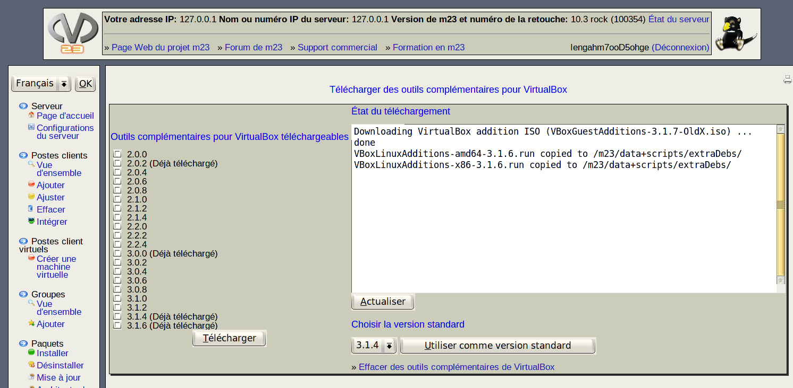

Sur cette page, vous pouvez télécharger les outils complémentaires de VirtualBox afin qu'il puissent être installés automatiquement sur les postes client m23 installés sous VirtualBox. L'installation de ces outils complémentaires sur le poste client améliorera les interactions avec le poste client virtualisé. Pour une cohabitation optimale entre le hôte et le poste client de VirtualBox, la version de VirtualBox et celle des outils complémentaires du poste client doivent être identiques. S'il n'y pas d'outil complémentaire sur le serveur m23, le client tentera de télécharger les outils complémentaires directement sur internet. Vous pouvez également choisir une version standard, qui sera installée lorsque le poste client ne peut pas identifier la version appropriée de VirtualBox.

Sous-sections
dodger
2012-12-10